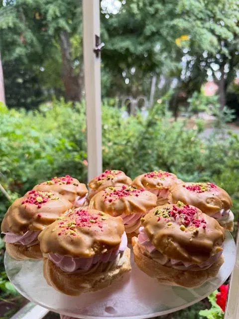
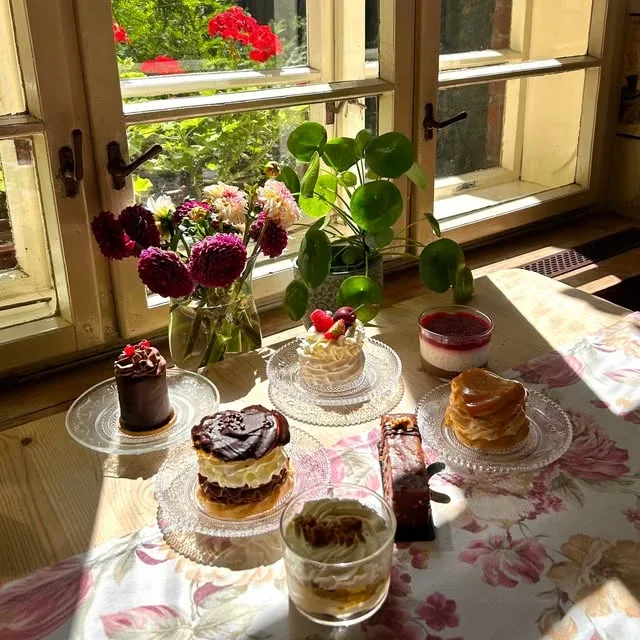
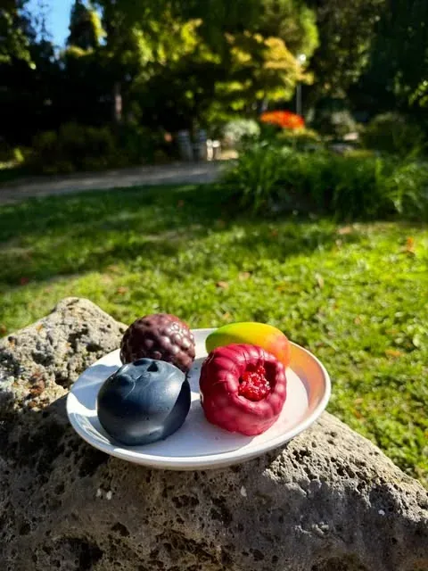
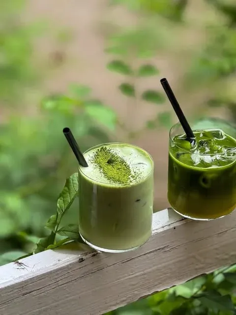
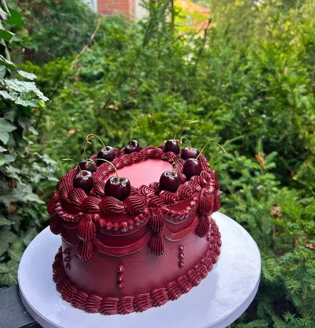
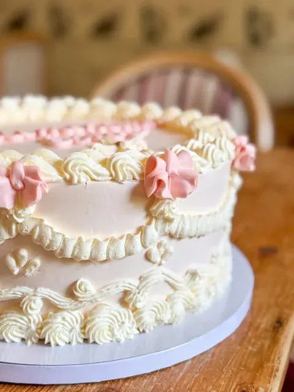
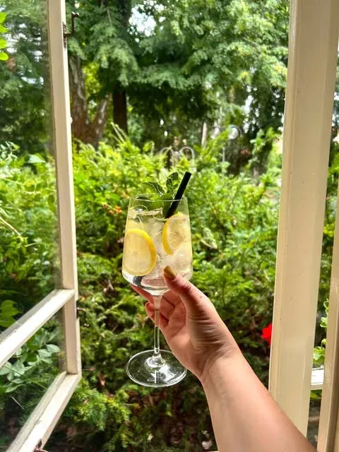
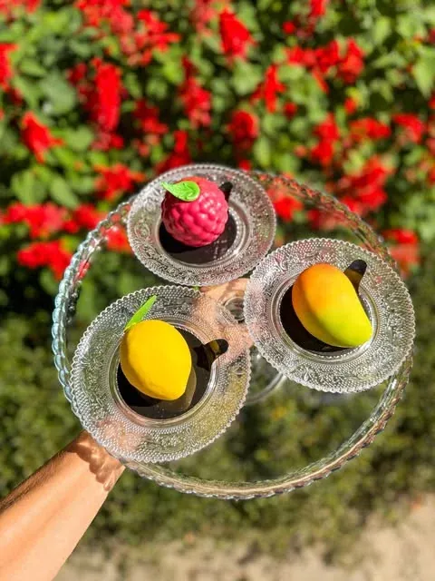

„vlastná výroba“
Zákusky
Torty a zákusky z vlastnej výroby, pripravované čerstvo.

Caffé and Restaurant · Piešťany
Kúpeľný ostrov · Piešťany



Na objednávku
V profile kaviarne stojí krátko: torty na objednávku
a vlastná výroba
. Na Instagrame majú torty vlastné albumy, vrátane svadobných.
Ukážka návrhu: postup objednávky, termíny a ceny tort doplní podnik.


Z vitríny a baru
Domáce torty a zákusky pripravované čerstvo, výberová káva a limonády — tak kaviareň opisuje Wanderlog a vlastný profil na Instagrame.
„vlastná výroba“
Torty a zákusky z vlastnej výroby, pripravované čerstvo.

„výberová káva“
Výberová káva, limonády a letné nápoje — na Instagrame v albume Drinks.

Mini desserts · Macarons
Malé dezerty v tvare ovocia — malina, citrón, mango. Album Mini desserts na Instagrame.

Ukážka návrhu: menu s cenami doplní podnik.
Na ostrove
Kaviareň nájdete na Kúpeľnom ostrove v Piešťanoch. Sedieť sa dá na záhradnej aj krytej terase s výhľadom do parku (podľa Wanderlogu).
Hodnotenia podľa Wanderlogu, 4. 10. 2026.
Otvorené
Denne 9:00–21:00
Podľa Wanderlogu — overiť.